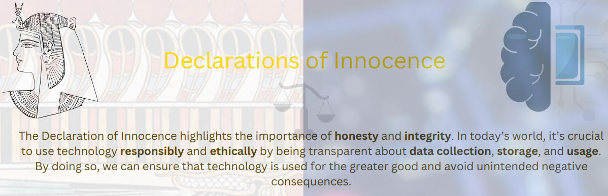
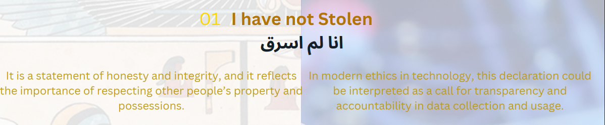
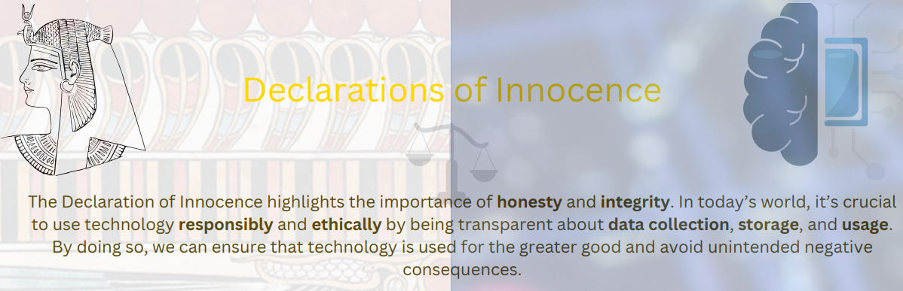
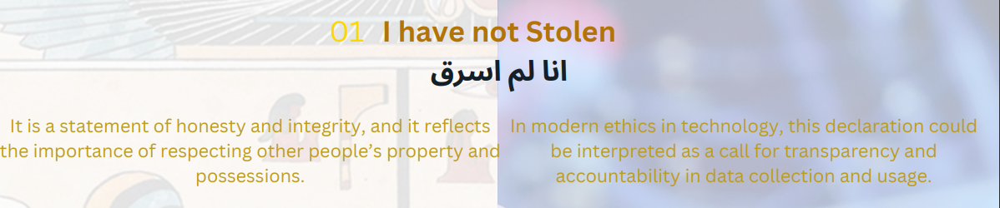

A social media platform has been under fire for allowing harmful content to be shared on its site. The platform’s algorithm has been promoting posts that contain hate speech and misinformation, which has led to an increase in online harassment and bullying. Many users have reported feeling distressed and unsafe on the platform, and some have even experienced mental health issues as a result. In response to these concerns, the platform decides to prioritize the well-being of its users and take action to prevent harm. It updates its algorithm to promote positive and informative content, and it implements stricter policies to remove harmful content from the site. The platform also provides resources and support for users who have been affected by online harassment and bullying. Similarly, ransomware attacks can cause harm and stress to the targeted individuals. For example, a hospital may be targeted by a ransomware attack that encrypts patient data and demands payment in exchange for the decryption key. This can cause significant harm to the hospital’s patients, who may be unable to access their medical records or receive necessary treatment. By prioritizing the well-being of its users, the hospital can take steps to prevent ransomware attacks and protect patient data.
John is a successful businessman who has been competing with his rival, Tom, for years. One day, John discovers that Tom is planning to launch a new product that will put John’s company out of business. In a desperate attempt to stop Tom, John hires a hacker to create a deepfake video that shows Tom admitting to committing a crime. John then anonymously shares the video on social media, hoping that it will ruin Tom’s reputation and prevent him from launching the new product. Unfortunately, the video goes viral and Tom is falsely accused of the crime. He is arrested and charged with a felony, and his reputation is ruined. It takes months for Tom to clear his name and prove that the video was fake, but by then, the damage has already been done.
a cybercriminal could use social engineering to deceive a person into revealing their credit card information. The cybercriminal could impersonate a bank representative and call the person, claiming that there has been suspicious activity on their account. The cybercriminal could then ask the person to verify their credit card information, including the card number, expiration date, and security code. The cybercriminal could then use this information to make unauthorized purchases or sell the information on the dark web